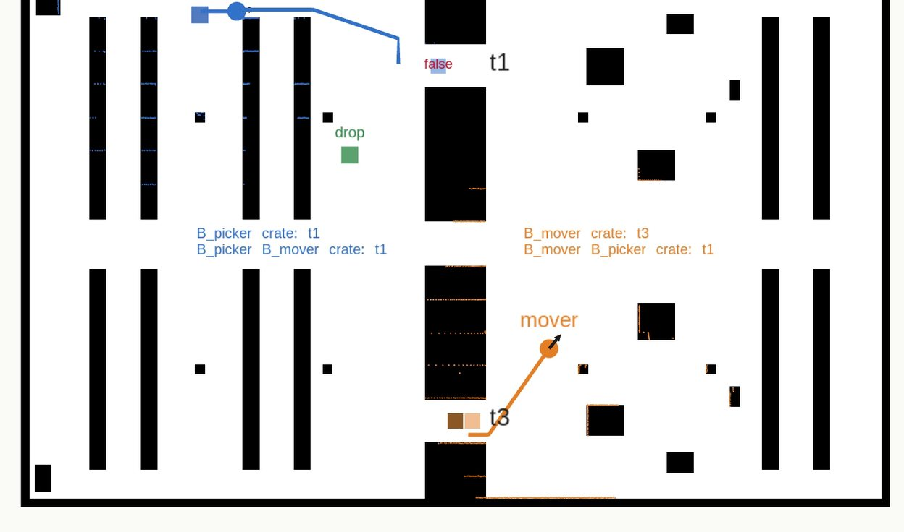
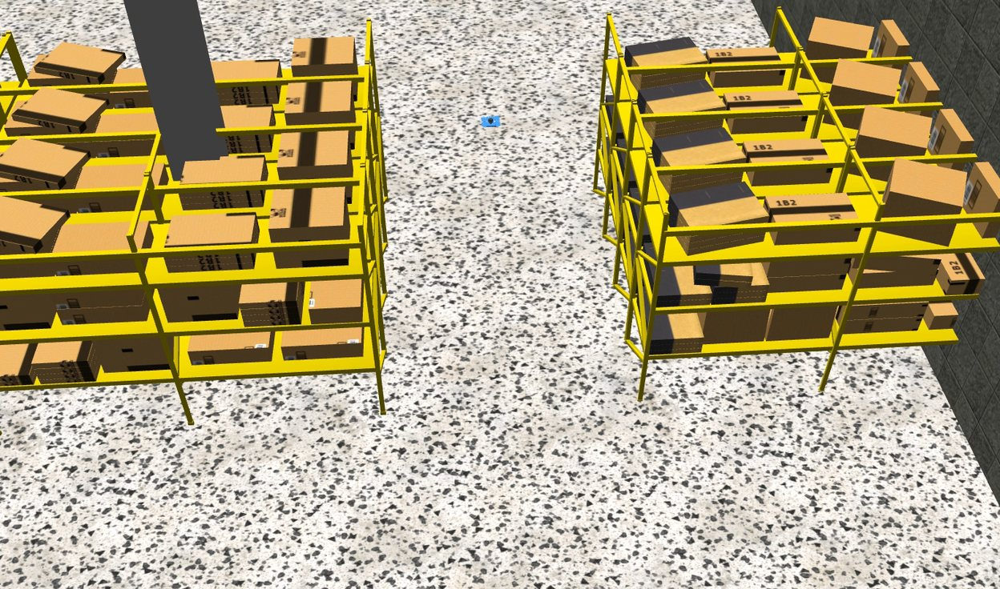
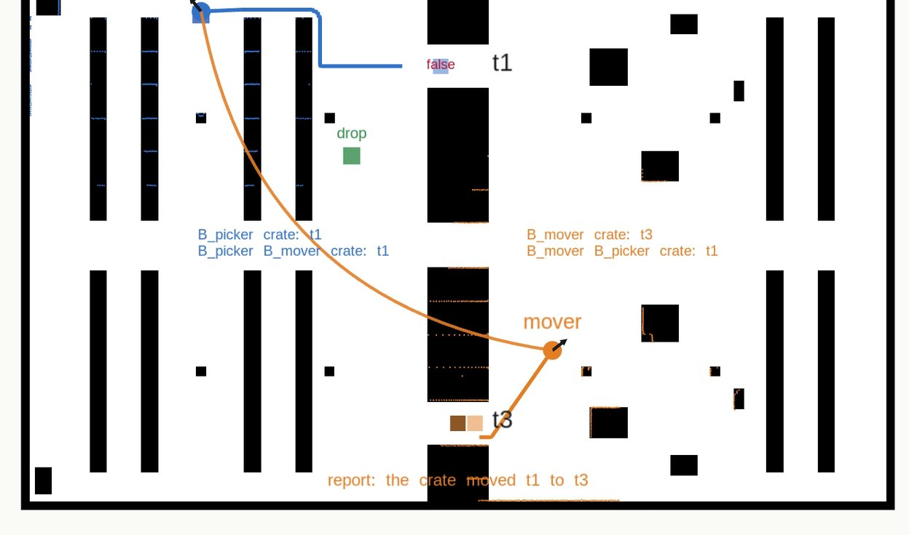
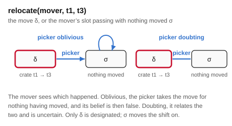
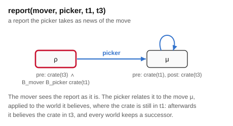
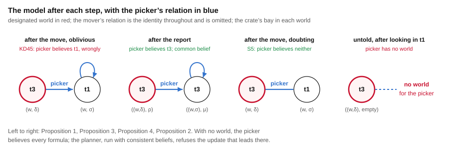

False belief · two agents · 30 × 50 m hall · ROS 2
The picker stores a crate in bay t1 of the pass-through floor and goes to charge at a dock from which neither bay is in sight. The mover carries the crate to t3. The picker is then to fetch it, and fetch requires that the crate be in the bay and that the picker believe it is. Where will the picker look? The setting follows the false-belief tasks of developmental psychology, the Sally-Anne test in particular[8][3], as formalised in dynamic epistemic logic by Bolander[4].
After the move the picker believes the crate is in t1, and the mover believes the picker believes so: the model the planner and the executor compute by product update has a false belief in it, and the mover's view of it. Finding t1 empty would leave the picker with no possible world at all, believing every formula; the planner, which refuses such an update, finds no policy without a radio, and with one it has the mover report the move before the picker fetches. A picker that allows the move without seeing it is uncertain and not wrong, and looks before it fetches. All three floors were executed in Gazebo, and on the one without a radio the picker drove to t1 and found it empty.
The planner requires consistent beliefs: without that, the floor without a radio has a policy that looks into t1 and then fetches from t3 on a belief that holds only because the look left the picker believing everything. Belief revision is not modelled: an observation that contradicts a belief has no consistent outcome here. The crate is carried by the simulator once a robot is in position under it; the robots have no gripper.
Package false_belief_demo, on the floor of pass_through_demo; policy from eplansys, grounding by plank, search by Aletheia. Full account in A False Belief on a Warehouse Floor (PDF): the event models, the proofs, the planning results, the grounding on the floor, the runs and the defects found on the way.
The runs
| action | what the run reported | model after |
|---|---|---|
| plan | no policy for fetched, after 0.1 s: the search space is exhausted at depth 3 | 1 world |
| go-dock(picker) | at its dock after 33 s; bays in line of sight: t1 no, t3 no | 1 / 1 |
| relocate(mover, t1, t3) | takes the crate from t1 after 56 s, sets it down in t3 after 124 s; in sight of the picker: t1 no, t3 no | 2 / 1 · \(B_{picker}\) t1, false |
| fetch(picker, t1) | the belief requirement held and the executor dispatched; at the mouth of t1 after 34 s the laser read 11.2 m along the bay: empty, and the fetch was refused | refused |
The mission then asked the epistemic state, and it answered: the crate is in t3; the picker believes it in t1; the mover believes the picker believes so; and the picker believes the mover believes it in t1.
| action | what the run reported | model after |
|---|---|---|
| plan | a policy of 4 nodes and 1 leaf, in 0.1 s | 1 world |
| go-dock(picker) | at its dock after 35 s; bays in line of sight: t1 no, t3 no | 1 / 1 |
| relocate(mover, t1, t3) | takes the crate from t1 after 57 s, sets it down in t3 after 128 s; in sight of the picker: t1 no, t3 no | 2 / 1 · \(B_{picker}\) t1, false |
| report(mover, picker, t1, t3) | “the crate was moved from t1 to t3”, delivered and acknowledged | 2 / 1 · \(B_{picker}\) t3 |
| fetch(picker, t3) | at the mouth of t3 after 71 s the laser read 3.1 m: the crate; set down at the drop 131 s after fetch began | fetched |
| action | what the run reported | model after |
|---|---|---|
| plan | a policy of 4 nodes and 1 leaf, in 0.1 s | 1 world |
| go-dock(picker) | at its dock after 36 s; bays in line of sight: t1 no, t3 no | 1 / 1 |
| relocate(mover, t1, t3) | takes the crate from t1 after 58 s, sets it down in t3 after 129 s | 2 / 1 · \(B_{picker}\) neither |
| look(picker, t1) | at the mouth of t1 after 33 s the laser read 11.2 m: empty, e-empty | 2 / 1 · \(K_{picker}\) t3 |
| fetch(picker, t3) | at the mouth of t3 after 46 s the laser read 3.1 m: the crate; set down at the drop 108 s after fetch began | fetched |
Every node of the three runs exited cleanly when the launch shut down.
What the runs show

The false belief The picker believes t1, and the mover knows it does A move the picker does not observe leaves it believing the crate is where it was, and the mover believing it believes so. The frame is KD45. Read the proposition →
No consistent observation Finding t1 empty leaves the picker no world An observation a belief rules out empties the believer's relation. A planner that refuses that state finds no policy without a radio. See why →
The report News of the move, not an announcement of the place The picker takes the report as the move it did not see. Its belief becomes true, and the location common belief. Check the event model →The problem
Agents \(\mathit{picker}\) and \(\mathit{mover}\), bays \(t_1\) and \(t_3\). Initially the model has one world, the crate is in \(t_1\), and everything is common knowledge. The goal is \(\mathit{fetched}\), and \[ \mathit{fetch}(\mathit{picker}, b)\ \text{ requires }\ \mathit{crate}(b) \wedge B_{\mathit{picker}}\,\mathit{crate}(b), \] so the picker drives to a bay only if it believes the crate is there. The shift fixes its first two actions: the picker goes to its dock, a public move, and the mover carries the crate from \(t_1\) to \(t_3\). Two phase atoms hold that order; the planner plans what follows. The three floors are three instances, two lines apart.
| floor | radio | the picker, during the move |
|---|---|---|
| told | yes | oblivious: takes the move for nothing having moved |
| untold | no | oblivious |
| doubt | no | doubting: allows that the crate was moved |
Belief here is the modality of a \(\mathrm{KD45}\) model: \(B_a\varphi\) holds at \(w\) when \(\varphi\) holds at every world \(a\) considers possible from \(w\), and it can be false. When \(a\) considers no world possible, \(B_a\varphi\) holds for every \(\varphi\), \(\bot\) included: \(a\) believes everything. Product update keeps transitivity and Euclideanness, and loses seriality exactly when an agent observes an event that none of the worlds it believes possible allows.
The epistemic actions
The relocation has two events: the move \(\delta\), and \(\sigma\), the mover's slot passing with nothing moved. \(\sigma\) carries the phase change because the picker knows the schedule: it knows the slot has passed and not whether the mover used it. The picker's type is Oblivious or Doubting according to the floor. The report has two events too: the report \(\rho\), designated, and \(\mu\), the move as the picker takes it, applied to the world it believes. Its precondition is a belief about a belief, \(B_{\mathit{mover}}B_{\mathit{picker}}\,\mathit{crate}(t_1)\): the false-belief test, as the condition for speaking.


The other two actions come from the intermediate library: look is semi-private sensing, the picker reading its laser along a bay while the mover sees only that it looked, and fetch is public and ontic.
The false belief
After the shift's two actions with the picker oblivious, the model has two worlds, \((w,\delta)\) with the crate in \(t_3\), designated, and \((w,\sigma)\) with it in \(t_1\). The picker's relation is \(\{((w,\delta),(w,\sigma)), ((w,\sigma),(w,\sigma))\}\): serial, transitive, Euclidean, and not reflexive. The model is \(\mathrm{KD45}\) and not \(\mathrm{S5}\), and at the designated world \[ \mathit{crate}(t_3) \wedge B_{\mathit{picker}}\,\mathit{crate}(t_1) \wedge B_{\mathit{mover}}B_{\mathit{picker}}\,\mathit{crate}(t_1) \wedge B_{\mathit{picker}}B_{\mathit{mover}}\,\mathit{crate}(t_1). \] ∎ The third conjunct answers the Sally-Anne question. The fourth is the picker believing the mover shares its belief: in the world the picker believes, nothing happened to anyone.

An observation the belief rules out
If \(M, w \models B_a\neg\psi\), \(a\) observes \(E\) fully, and \(e\) is an event with \(M, w \models \mathit{pre}(e)\) and \(\mathit{pre}(e) \models \psi\), then \((w,e)\) has no \(a\)-successor in \(M \otimes E\). The only event Fully relates to \(e\) is \(e\), and every world \(a\) believes possible falsifies \(\mathit{pre}(e)\). ∎
Looking into \(t_1\) and finding it empty is such an event, with \(\psi = \neg\mathit{crate}(t_1)\); so is a truthful public announcement that the crate is in \(t_3\), which is why the report is not an announcement. Without a radio, every action after the shift either fails its precondition or leaves the picker believing everything, and the planner, which refuses such a state, finds no policy: the search space is exhausted at depth 3.
Aletheia can keep a product that loses seriality (its default, as plank does), repair it, or refuse it. Kept, the look leaves the picker believing \(\mathit{crate}(t_3)\) along with everything else, and the planner returns look into t1, then fetch from t3 on the floor without a radio. Refused, it returns nothing. ePlanSys's planner plugin refuses by default, and validate.sh checks both.
The report
In the model of Proposition 1 the report applies at the designated world, and after it the two worlds are \(((w,\delta),\rho)\), designated, and \(((w,\sigma),\mu)\), both with the crate in \(t_3\). The picker relates the first to the second and the second to itself, the mover each to itself. Every world keeps a successor, and \(B_{\mathit{picker}}\,\mathit{crate}(t_3) \wedge C_{\{\mathit{picker},\mathit{mover}\}}\,\mathit{crate}(t_3)\) holds. ∎
The picker's relation is still not reflexive: it believes the crate was moved just now, and it was moved earlier. Nothing it believes about the crate is false.
Doubt
With the picker doubting, the move leaves the same two worlds and the picker relating them both ways: an equivalence, so the model is \(\mathrm{S5}\), and the picker believes the crate in neither bay. Looking into \(t_1\) and finding it empty is then consistent, and afterwards \(K_{\mathit{picker}}\,\mathit{crate}(t_3)\). ∎ The planner's policy is that: look into \(t_1\), then fetch from \(t_3\).
Planning
plank grounds each floor into 13 atoms and 18 ground actions. Aletheia, with consistent beliefs required:
| floor | policy |
|---|---|
| told | go-dock, relocate, report(mover, picker, t1, t3), fetch(picker, t3); depth 4 |
| untold | none: the space is exhausted at depth 3 |
| doubt | go-dock, relocate, look(picker, t1), fetch(picker, t3); depth 4 |
tools/validate.sh checks six statements without a simulator: the false belief and its attribution after the shift's two actions; the told policy, with every robot's belief consistent at every node; no policy on the untold floor; the collapse after the look; the vacuous policy when consistent beliefs are not required, and that the trace finds the collapse in it; and the doubt policy, with the picker uncertain and its relation reflexive after the move.
The floor
The racking block crosses the hall with three tunnel bays. The picker works the storage floor and reaches a bay from its south mouth; the mover works the dispatch floor and reaches it from the north. The dock is against the west wall between two rows of racking. Three claims about the floor are checked by casting rays over the floor plan before it is written: from the dock neither bay is in sight; from either mouth a robot sees along a bay to the crate's place and through to the far floor; and every place a robot is sent is reachable. The performers check the first again during the run: the picker logs which bays it can see once docked, and the mover, when it sets the crate down, which bays are in sight of where the picker stands.
Looking is the picker's laser, read straight along the bay's axis from its mouth: a crate reads at about three metres, an empty bay through to the dispatch floor at about eleven. fetch reads the same before it drives in, and refuses if the bay is empty, whatever the model says.
Defects
A policy on every floor. The first solve returned the same policy for all three floors: look into t1, then fetch from t3. Applied by hand, the look left the picker with no world, and the fetch's belief precondition held vacuously. Aletheia's default keeps such a product, as plank does; with consistent beliefs required the untold floor has no policy, as it should.
A phase the picker could not see pass. With consistent beliefs required, the told floor had no policy either. The relocation's nothing-moved event was trivial, so the phase atom it should have cleared stayed set in the world the picker believed, and the fetch had no world to apply to there. The event now clears it: the picker knows the mover's slot has passed, and does not know the mover used it. The same leak had made the doubt floor's look decisive for the wrong reason.
The tracked model keeps a collapse. The epistemic state applies updates with Aletheia's default. Had the picker looked into t1 on the untold floor, the tracked model would have let it pass every belief check that followed. The untold run sends it to fetch, and the fetch is checked against the floor.
Limits
References
Reproduction
ros2 launch false_belief_demo false_belief_launch.py floor:=told
ros2 launch false_belief_demo false_belief_launch.py floor:=untold
ros2 launch false_belief_demo false_belief_launch.py floor:=doubt
bash tools/validate.sh # six checks, no simulator
bash tools/record_demo.sh told /tmp/raw_told.mkv /tmp/run_told.log
bash tools/record_demo.sh untold /tmp/raw_untold.mkv /tmp/run_untold.log
bash tools/record_demo.sh doubt /tmp/raw_doubt.mkv /tmp/run_doubt.log